Phasespace analysis¶
strym’s phasespace class allows for further analysis of vehicle’s state data at phasespace level.
[1]:
import strym
from strym import strymread
from strym import phasespace
print(strym.__version__)
import pandas as pd
import matplotlib.pyplot as plt
import numpy as np
/home/ivory/anaconda3/envs/dbn/lib/python3.7/site-packages/statsmodels/tools/_testing.py:19: FutureWarning: pandas.util.testing is deprecated. Use the functions in the public API at pandas.testing instead.
import pandas.util.testing as tm
0.2.2
Analyzing RAV4’s Data from 5th March 2020¶
[3]:
dbcfile = '../examples/newToyotacode.dbc'
datafolder = "../../PandaData/2020_03_05/"
import glob
csvlist = glob.glob(datafolder+"*.csv")
[6]:
r =strymread(csvfile=csvlist[0], dbcfile=dbcfile)
speed = r.speed()
strymread.plt_ts(speed, title = "Speed [km/h]")
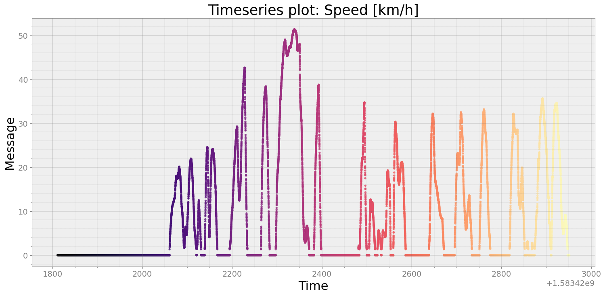
I will clip first 250 seconds as during first 250 seconds, vehicle was not vehicle, evident from speed plot above.¶
[8]:
r_subset = r.msg_subset(time=(250, r.triptime()))
speed = r_subset.speed()
strymread.plt_ts(speed, title = "Speed [km/h]")
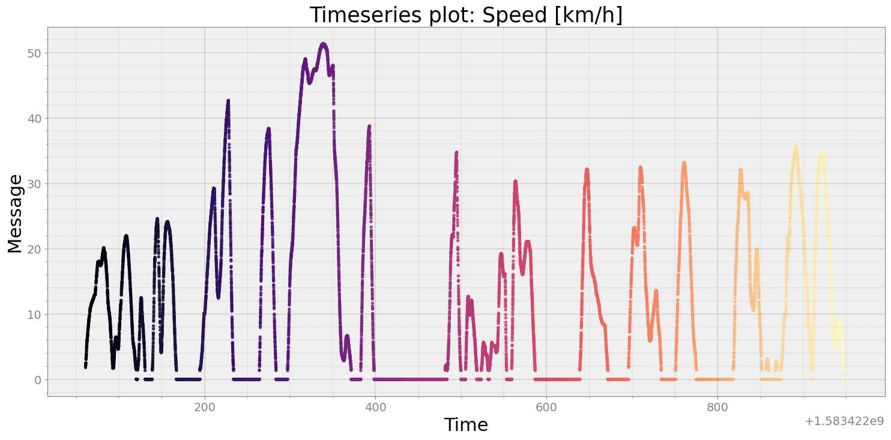
[9]:
# Convert Speed to m/s
speed['Message'] = speed['Message']*(5.0/18.0)
strymread.plt_ts(speed, title = "Speed [m/s] Timeseries plot")
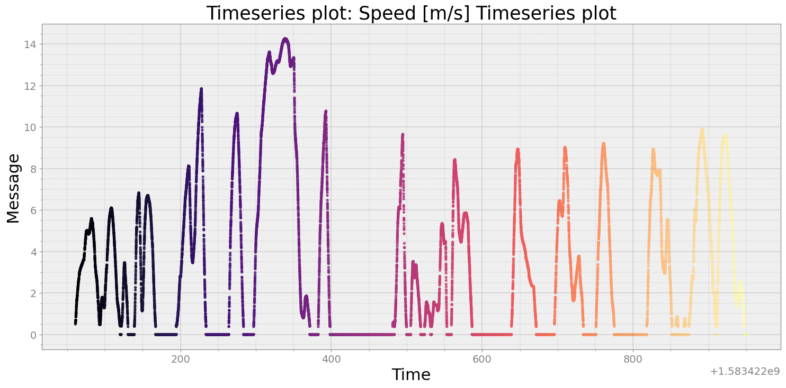
Perform slicing: slice dataset in to duration of 30 seconds¶
[10]:
r_subsets = []
time_increment = 30
init_time = 0
triptime = r_subset.triptime()
while (init_time + time_increment) <= triptime:
r_new = r_subset.msg_subset(time=(init_time, init_time + time_increment))
r_subsets.append(r_new)
init_time = init_time + time_increment
We will visualize data at speed-acceleration phase-space¶
Plot phase-space diagram and histogram of distance from centroid for every slice¶
[13]:
for subsets in r_subsets:
accelx = subsets.accelx()
speed = subsets.speed()
# Convert Km/h to m/s
speed['Message'] = speed['Message']*(5.0/18.0)
print("\n----------------------------\n")
print("Covering trip times from {} to {}".format(subsets.start_time(), subsets.end_time()))
re_speed, re_accelx = strymread.ts_sync(speed, accelx, rate="first")
ps = phasespace(dfx=re_speed, dfy=re_accelx, resample_type="first")
ps.phaseplot(title='Phase-space plot of speed-acceleration for RAV4 Data from 5th March 2020 Drive',
xlabel='speed', ylabel='acceleration')
ps.centroidplot
print("Average Centroid Distane of cluster is {}".format(ps.acd))
----------------------------
Covering trip times from Thu Mar 5 08:27:40 2020 to Thu Mar 5 08:28:10 2020
No resampling is required as time points of both dataframe are identical
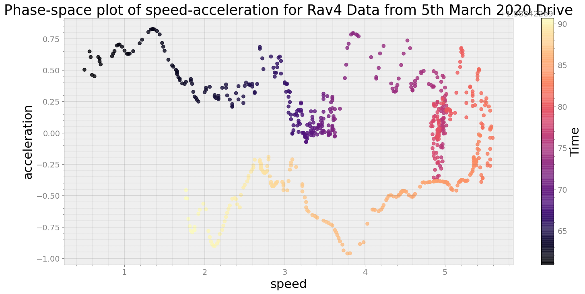
Average Centroid Distane of cluster is 6.87585039790307
----------------------------
Covering trip times from Thu Mar 5 08:28:10 2020 to Thu Mar 5 08:28:40 2020
No resampling is required as time points of both dataframe are identical
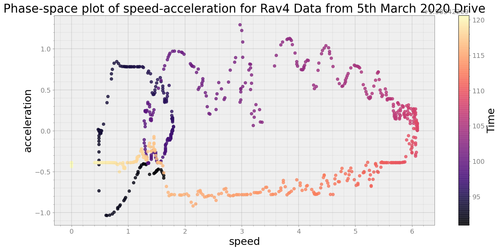
Average Centroid Distane of cluster is 23.80330387013879
----------------------------
Covering trip times from Thu Mar 5 08:28:40 2020 to Thu Mar 5 08:29:10 2020
No resampling is required as time points of both dataframe are identical
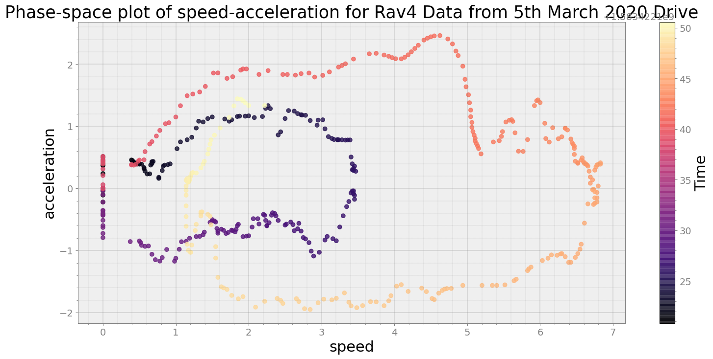
Average Centroid Distane of cluster is 61.77853550559263
----------------------------
Covering trip times from Thu Mar 5 08:29:10 2020 to Thu Mar 5 08:29:40 2020
No resampling is required as time points of both dataframe are identical
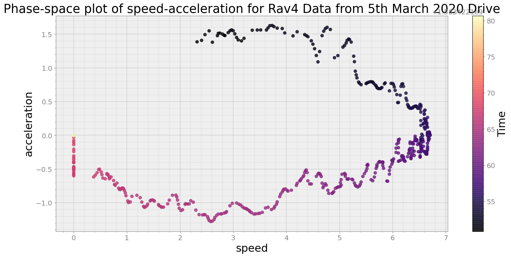
Average Centroid Distane of cluster is 84.68699589936988
----------------------------
Covering trip times from Thu Mar 5 08:29:40 2020 to Thu Mar 5 08:30:10 2020
No resampling is required as time points of both dataframe are identical
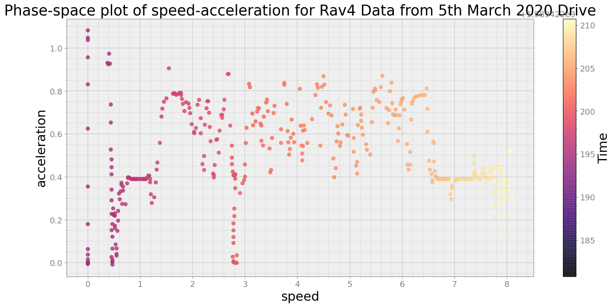
Average Centroid Distane of cluster is 137.70733835615115
----------------------------
Covering trip times from Thu Mar 5 08:30:10 2020 to Thu Mar 5 08:30:40 2020
No resampling is required as time points of both dataframe are identical
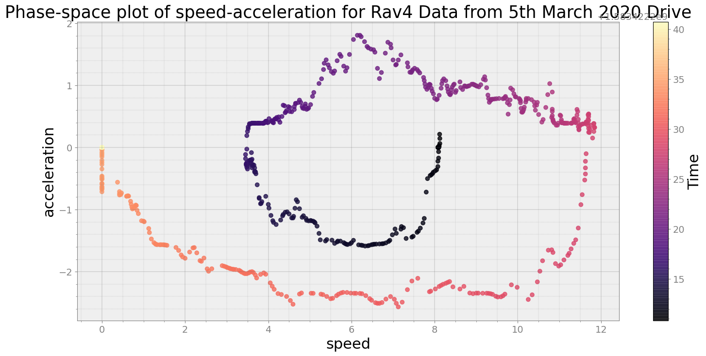
Average Centroid Distane of cluster is 462.5678663348434
----------------------------
Covering trip times from Thu Mar 5 08:30:40 2020 to Thu Mar 5 08:31:10 2020
No resampling is required as time points of both dataframe are identical
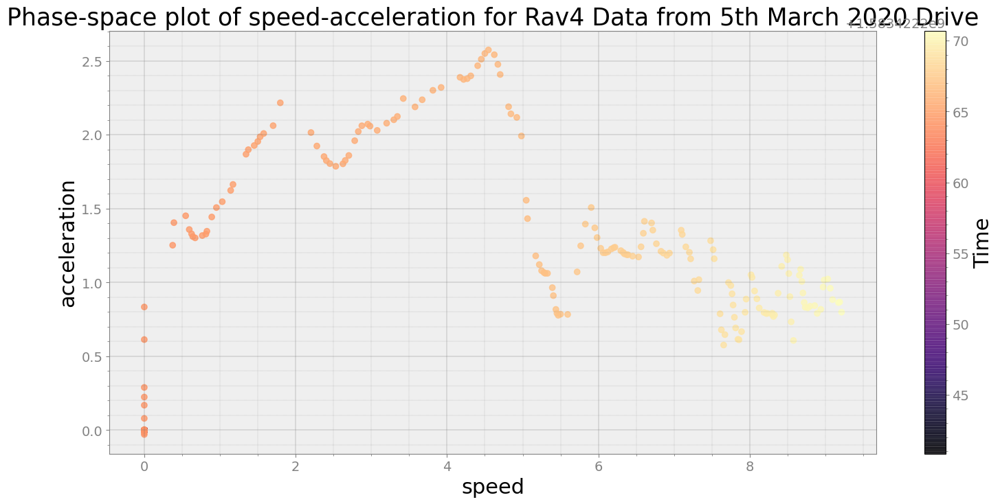
Average Centroid Distane of cluster is 231.89565650742722
----------------------------
Covering trip times from Thu Mar 5 08:31:10 2020 to Thu Mar 5 08:31:40 2020
No resampling is required as time points of both dataframe are identical
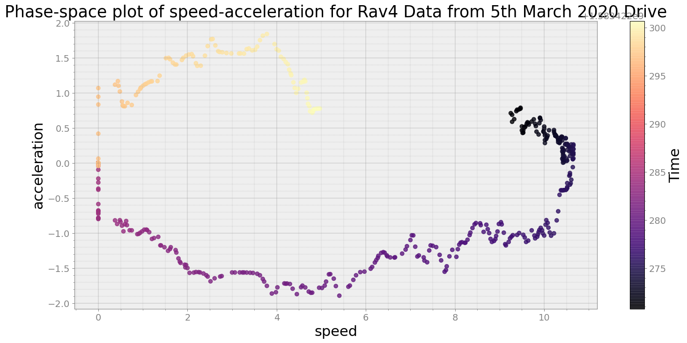
Average Centroid Distane of cluster is 530.2217855216616
----------------------------
Covering trip times from Thu Mar 5 08:31:40 2020 to Thu Mar 5 08:32:10 2020
No resampling is required as time points of both dataframe are identical
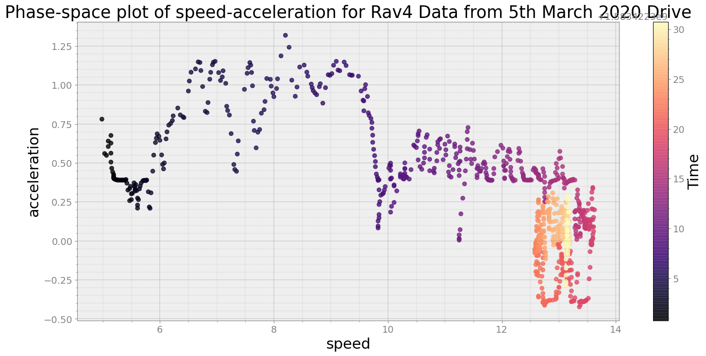
Average Centroid Distane of cluster is 139.11279012617774
----------------------------
Covering trip times from Thu Mar 5 08:32:10 2020 to Thu Mar 5 08:32:40 2020
No resampling is required as time points of both dataframe are identical
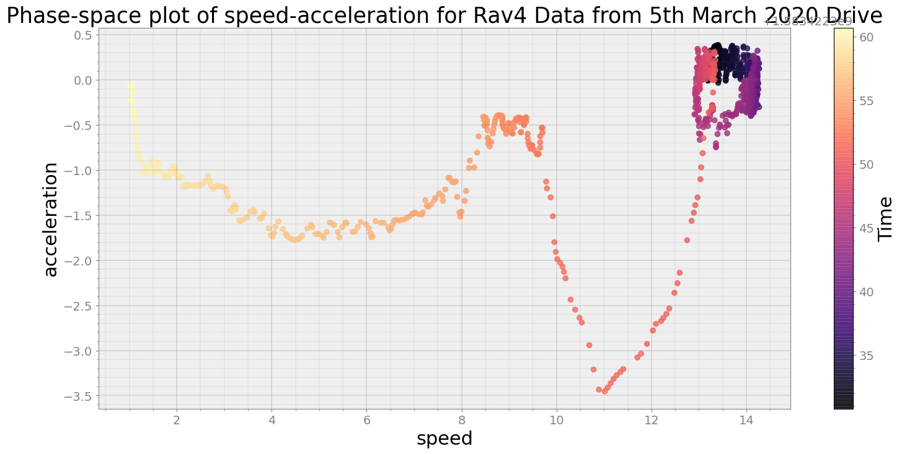
Average Centroid Distane of cluster is 901.343920212635
----------------------------
Covering trip times from Thu Mar 5 08:32:40 2020 to Thu Mar 5 08:33:10 2020
No resampling is required as time points of both dataframe are identical
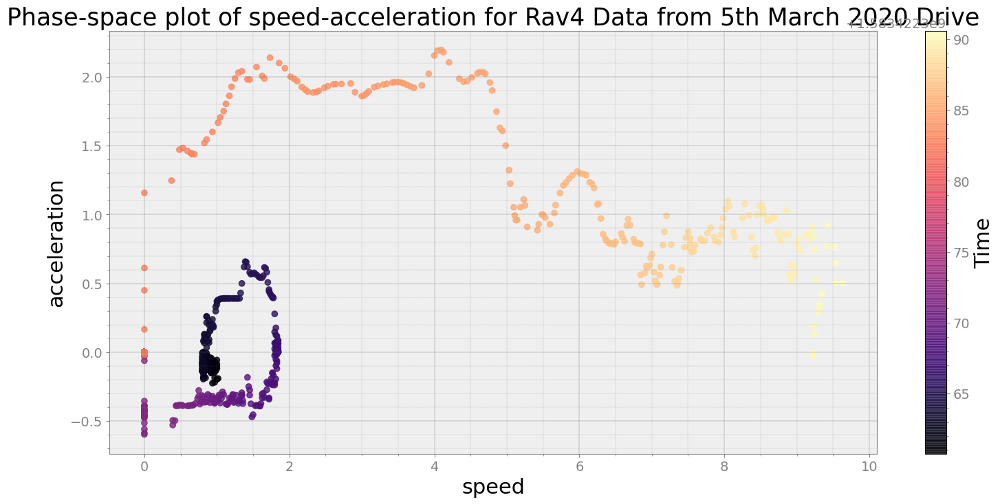
Average Centroid Distane of cluster is 228.49200589065754
----------------------------
Covering trip times from Thu Mar 5 08:33:10 2020 to Thu Mar 5 08:33:40 2020
No resampling is required as time points of both dataframe are identical
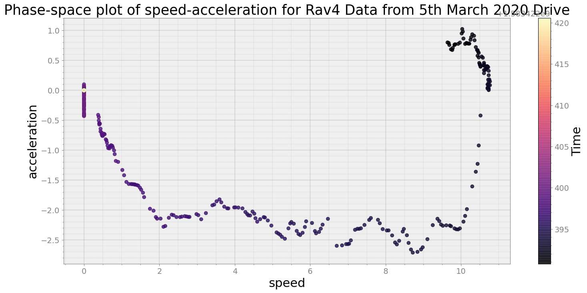
Average Centroid Distane of cluster is 663.526388766679
----------------------------
Covering trip times from Thu Mar 5 08:33:40 2020 to Thu Mar 5 08:34:10 2020
No resampling is required as time points of both dataframe are identical
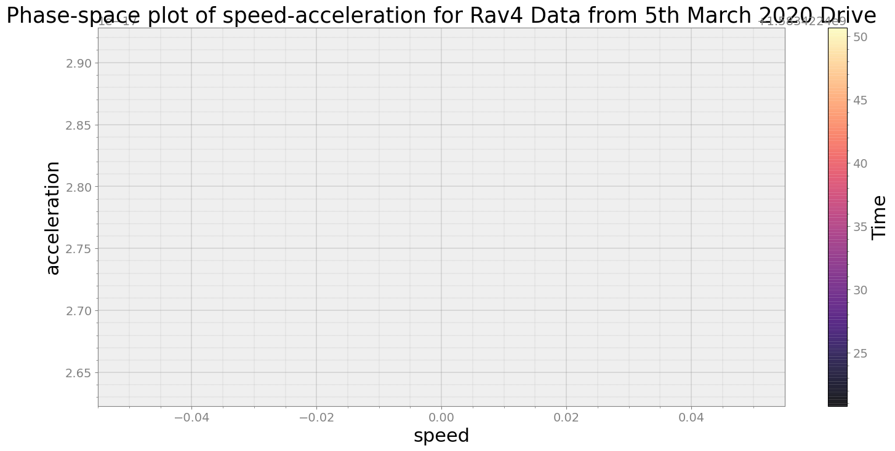
Average Centroid Distane of cluster is 0.0
----------------------------
Covering trip times from Thu Mar 5 08:34:10 2020 to Thu Mar 5 08:34:40 2020
No resampling is required as time points of both dataframe are identical
Average Centroid Distane of cluster is 0.0
----------------------------
Covering trip times from Thu Mar 5 08:34:40 2020 to Thu Mar 5 08:35:10 2020
No resampling is required as time points of both dataframe are identical
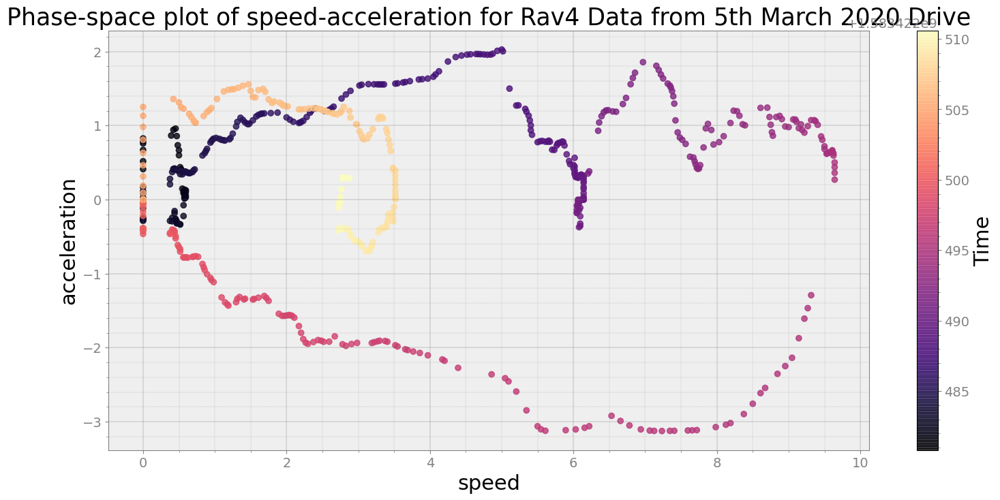
Average Centroid Distane of cluster is 199.36444469579865
----------------------------
Covering trip times from Thu Mar 5 08:35:10 2020 to Thu Mar 5 08:35:40 2020
No resampling is required as time points of both dataframe are identical
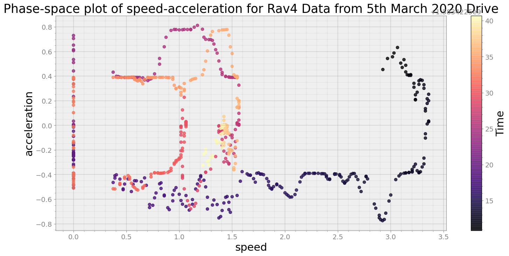
Average Centroid Distane of cluster is 2.386525631302482
----------------------------
Covering trip times from Thu Mar 5 08:35:40 2020 to Thu Mar 5 08:36:10 2020
No resampling is required as time points of both dataframe are identical
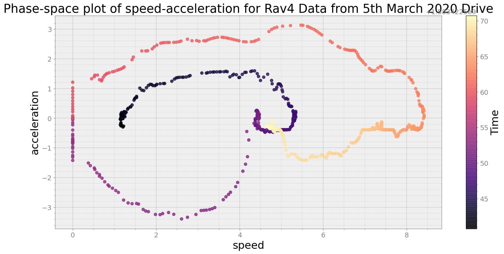
Average Centroid Distane of cluster is 131.0724237563401
----------------------------
Covering trip times from Thu Mar 5 08:36:10 2020 to Thu Mar 5 08:36:40 2020
No resampling is required as time points of both dataframe are identical
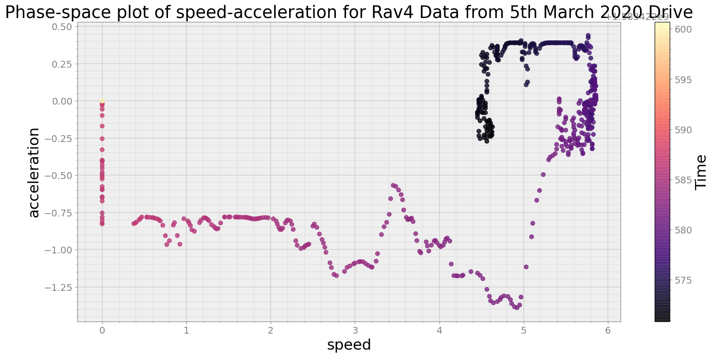
Average Centroid Distane of cluster is 48.282910368278195
----------------------------
Covering trip times from Thu Mar 5 08:36:40 2020 to Thu Mar 5 08:37:10 2020
No resampling is required as time points of both dataframe are identical
Average Centroid Distane of cluster is 0.0
----------------------------
Covering trip times from Thu Mar 5 08:37:10 2020 to Thu Mar 5 08:37:40 2020
No resampling is required as time points of both dataframe are identical
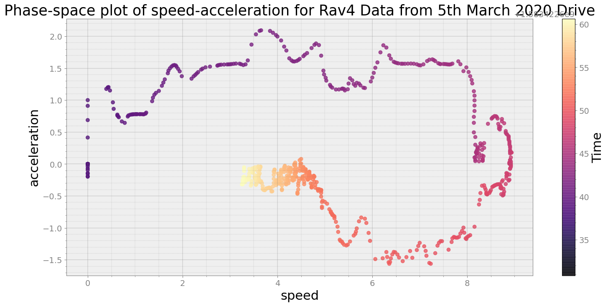
Average Centroid Distane of cluster is 149.02778345905247
----------------------------
Covering trip times from Thu Mar 5 08:37:40 2020 to Thu Mar 5 08:38:10 2020
No resampling is required as time points of both dataframe are identical
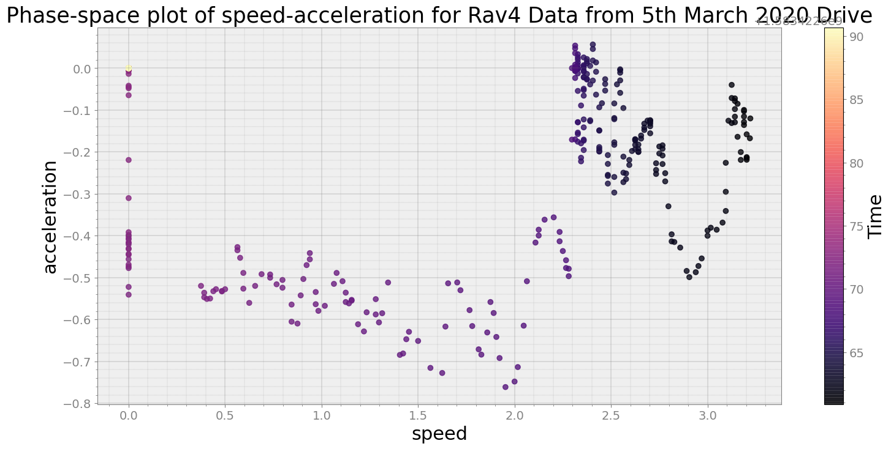
Average Centroid Distane of cluster is 3.248376709024835
----------------------------
Covering trip times from Thu Mar 5 08:38:10 2020 to Thu Mar 5 08:38:40 2020
No resampling is required as time points of both dataframe are identical
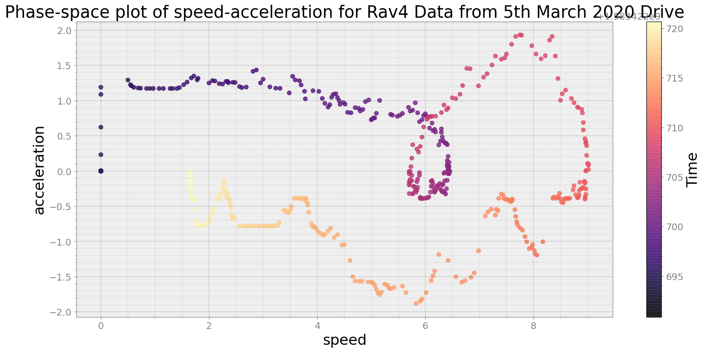
Average Centroid Distane of cluster is 132.80997310619364
----------------------------
Covering trip times from Thu Mar 5 08:38:40 2020 to Thu Mar 5 08:39:10 2020
No resampling is required as time points of both dataframe are identical
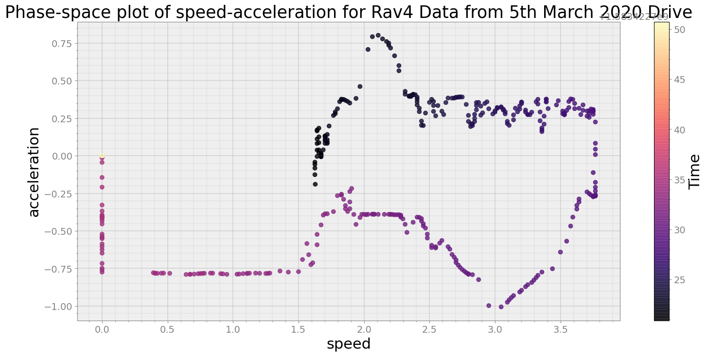
Average Centroid Distane of cluster is 6.76930253408322
----------------------------
Covering trip times from Thu Mar 5 08:39:10 2020 to Thu Mar 5 08:39:40 2020
No resampling is required as time points of both dataframe are identical

Average Centroid Distane of cluster is 175.65452034712243
----------------------------
Covering trip times from Thu Mar 5 08:39:40 2020 to Thu Mar 5 08:40:10 2020
No resampling is required as time points of both dataframe are identical
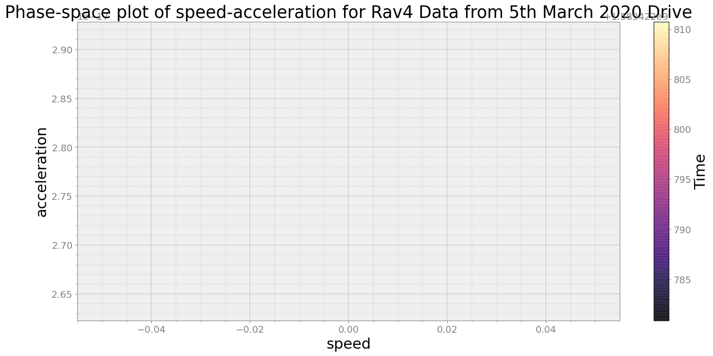
Average Centroid Distane of cluster is 0.0
----------------------------
Covering trip times from Thu Mar 5 08:40:10 2020 to Thu Mar 5 08:40:40 2020
No resampling is required as time points of both dataframe are identical
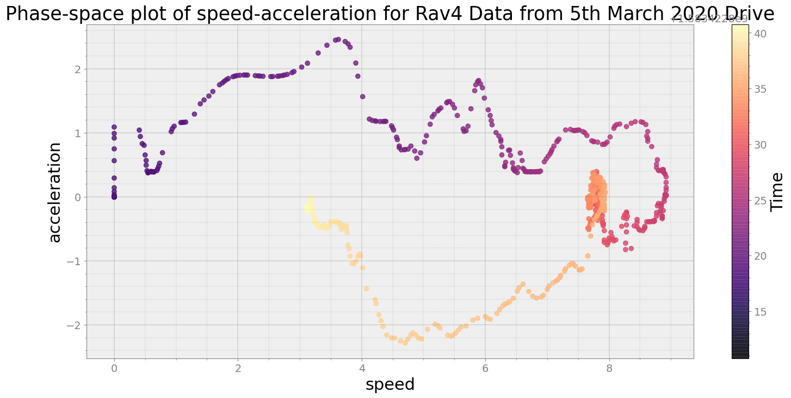
Average Centroid Distane of cluster is 193.75163234151216
----------------------------
Covering trip times from Thu Mar 5 08:40:40 2020 to Thu Mar 5 08:41:10 2020
No resampling is required as time points of both dataframe are identical
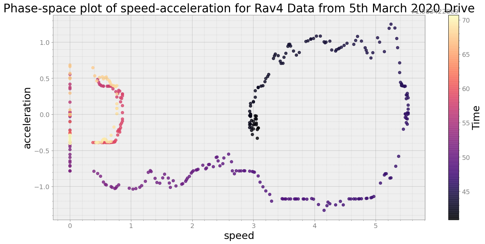
Average Centroid Distane of cluster is 31.599271964555367
----------------------------
Covering trip times from Thu Mar 5 08:41:10 2020 to Thu Mar 5 08:41:40 2020
No resampling is required as time points of both dataframe are identical
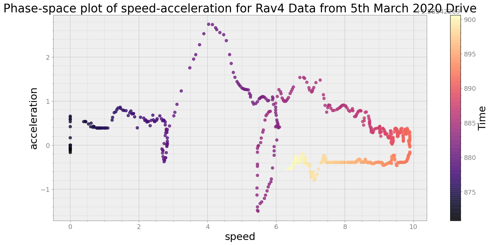
Average Centroid Distane of cluster is 232.11245330753547
----------------------------
Covering trip times from Thu Mar 5 08:41:40 2020 to Thu Mar 5 08:42:10 2020
No resampling is required as time points of both dataframe are identical
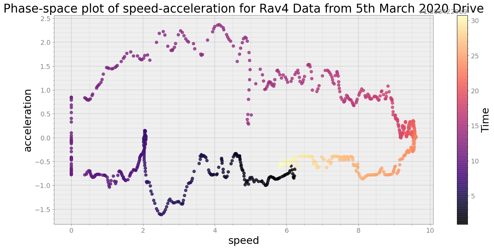
Average Centroid Distane of cluster is 182.14827374608657
Analyzing Ring Road Data from 28th July 2016¶
Not only CAN Bus message but any kind of vehicle data, if have appropriate state information, can be used with phasespace class for analysis. We will demonstrate this with Arizona Ring Road Experiment Dataset¶
[16]:
speedfiles = [['../../ARED/2016-07-28/data_by_test/Bag Files/test3_09-23-59/catvehicle-vel.csv'],
['../../ARED/2016-07-28/data_by_test/Bag Files/test7_11-07-25/catvehicle-vel.csv'],
['../../ARED/2016-07-28/data_by_test/Bag Files/test6_10-47-54/catvehicle-vel.csv'],
['../../ARED/2016-07-28/data_by_test/Bag Files/test8_12-09-17/catvehicle-vel.csv'],
['../../ARED/2016-07-28/data_by_test/Bag Files/test5_10-17-31/catvehicle-vel.csv'],
['../../ARED/2016-07-28/data_by_test/Bag Files/test9_12-30-55/catvehicle-vel.csv'],
['../../ARED/2016-07-28/data_by_test/Bag Files/test10_12-49-51/catvehicle-vel.csv'],
['../../ARED/2016-07-28/data_by_test/Bag Files/test4_09-41-04/catvehicle-vel.csv']]
However, we will need to rename message column to ‘Message’ so that it can be recognized by strym as a timseries data
[18]:
speed28 = [None]*len(speedfiles)
for i, s in enumerate(speedfiles):
speed28[i] = pd.read_csv(s[0])
speed28[i].drop(speed28[i].columns.difference(['Time', 'LinearX']), 1, inplace=True)
speed28[i].rename(columns = {'LinearX':'Message'}, inplace = True)
Check the plot of the speed data¶
[19]:
fig, ax = strymread.create_fig(1)
ax = ax[0]
ax.scatter(speed28[4]['Time'], speed28[4]['Message'], c=speed28[4]['Time'] , s= 8)
ax.set_title('Speed of ' + speedfiles[4][0])
ax.set_xlabel("Time")
ax.set_ylabel("Speed [m/s]")
plt.show()
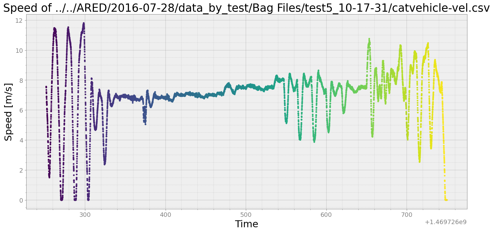
Since ARED dataset doesn’t have acceleration directly, we will estimate acceleration from the velocity
[20]:
accel = strymread.differentiate(speed28[4])
accel_denoised = strymread.denoise(accel,window_size=20 )
[21]:
fig, ax = strymread.create_fig(1)
ax = ax[0]
plt.rcParams["figure.figsize"] = (14,6)
ax.plot(accel['Time'], accel['Message'])
ax.plot(accel_denoised['Time'], accel_denoised['Message'])
plt.title('Acceleration')
plt.legend(["Original Acceleration (m/s^2)","Denoised Acceleration (m/s^2)" ])
[21]:
<matplotlib.legend.Legend at 0x7f0cb5fd2290>
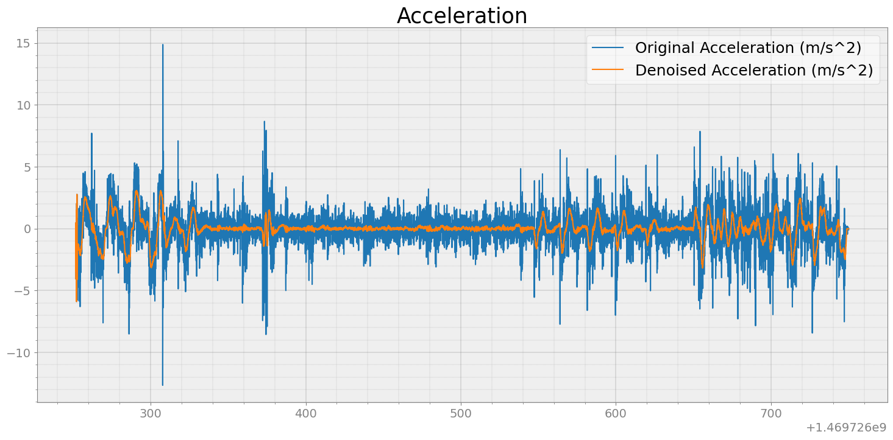
Now, will visualize speed-acceleration and how it evolved in a 30 seconds time-slice
[42]:
speed28[4] = strymread.remove_duplicates(speed28[4])
speed_split, split = strymread.split_ts(speed28[4], by = 30)
plt.show()
for df in split:
print("\n----------------------------\n")
print("Covering trip times from {} to {}".format(strymread.dateparse(df['Time'].iloc[0]), strymread.dateparse(df['Time'].iloc[-1])))
accel_split = strymread.differentiate(df)
accel_split_denoised = strymread.denoise(accel_split, window_size=20)
ps = phasespace(dfx=df, dfy=accel_split_denoised, resample_type="first")
ps.phaseplot(title='Phase-space plot of speed-acceleration for Ring Road Experiment (July 28, 2020)',
xlabel='speed', ylabel='acceleration')
ps.centroidplot( xlabel='Centroid Distance', ylabel='Counts')
print("Average Centroid Distane of cluster is {}".format(ps.acd))
----------------------------
Covering trip times from 2016-07-28 10:17:31:706100 to 2016-07-28 10:18:01:705900
No resampling is required as time points of both dataframe are identical
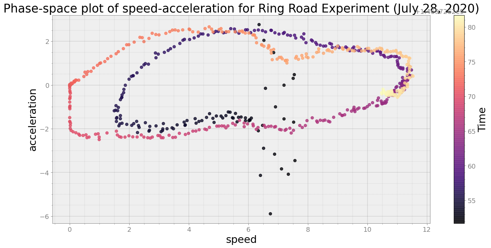
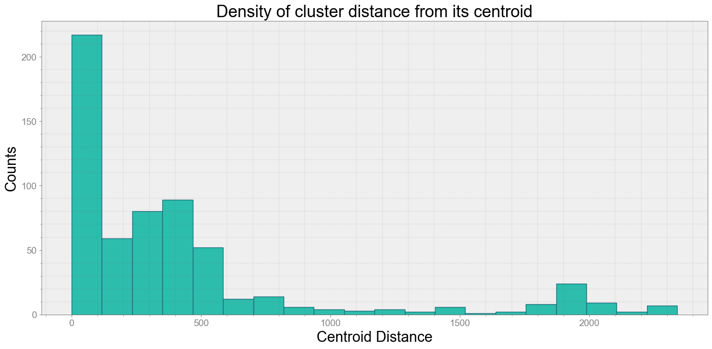
Average Centroid Distane of cluster is 429.61725986538573
----------------------------
Covering trip times from 2016-07-28 10:18:01:753900 to 2016-07-28 10:18:31:752600
No resampling is required as time points of both dataframe are identical
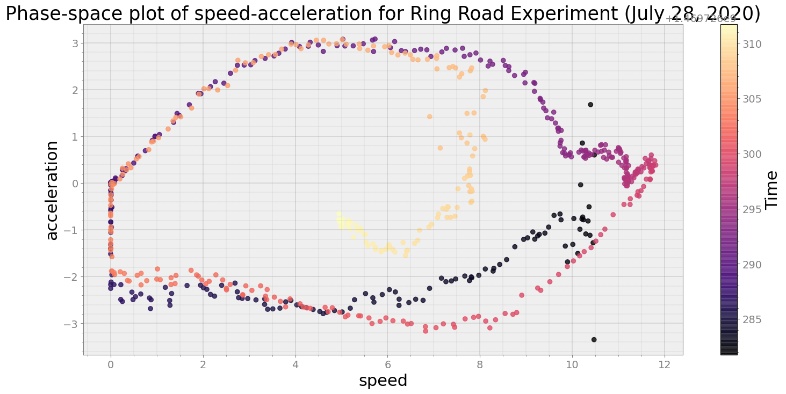
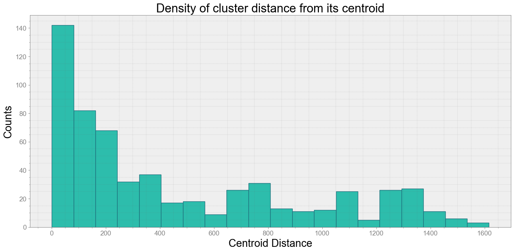
Average Centroid Distane of cluster is 461.93175411387233
----------------------------
Covering trip times from 2016-07-28 10:18:31:805700 to 2016-07-28 10:19:01:805300
No resampling is required as time points of both dataframe are identical
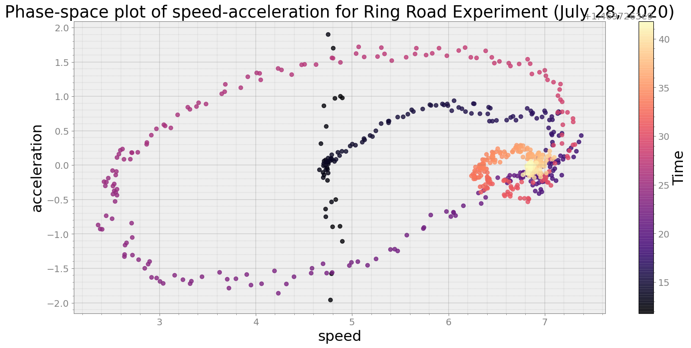
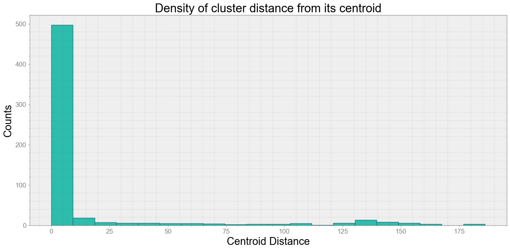
Average Centroid Distane of cluster is 15.75146049380393
----------------------------
Covering trip times from 2016-07-28 10:19:01:850900 to 2016-07-28 10:19:31:850100
No resampling is required as time points of both dataframe are identical
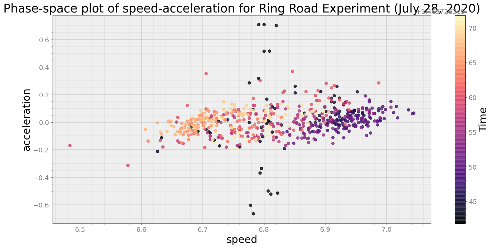
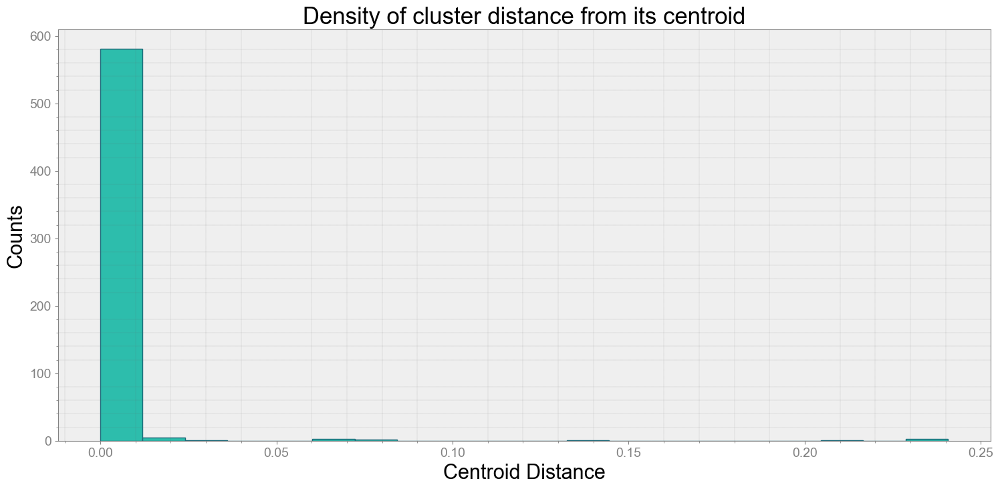
Average Centroid Distane of cluster is 0.00309862224694742
----------------------------
Covering trip times from 2016-07-28 10:19:31:904000 to 2016-07-28 10:20:01:903300
No resampling is required as time points of both dataframe are identical
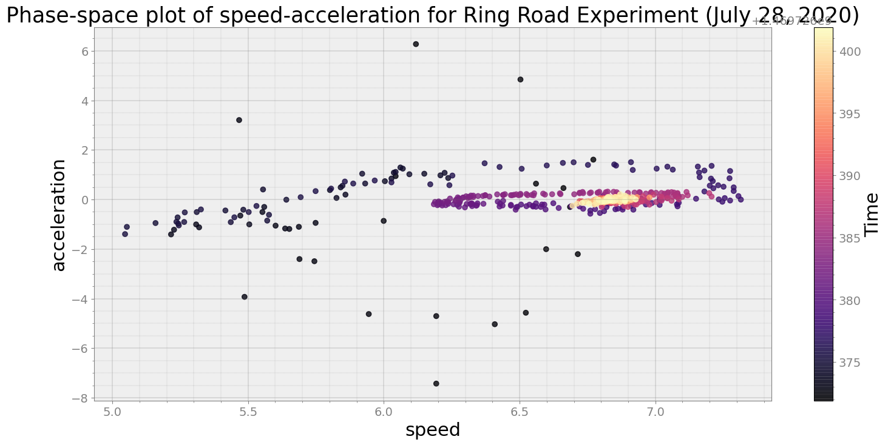
Average Centroid Distane of cluster is 13.61670322861849
----------------------------
Covering trip times from 2016-07-28 10:20:01:950900 to 2016-07-28 10:20:31:950200
No resampling is required as time points of both dataframe are identical
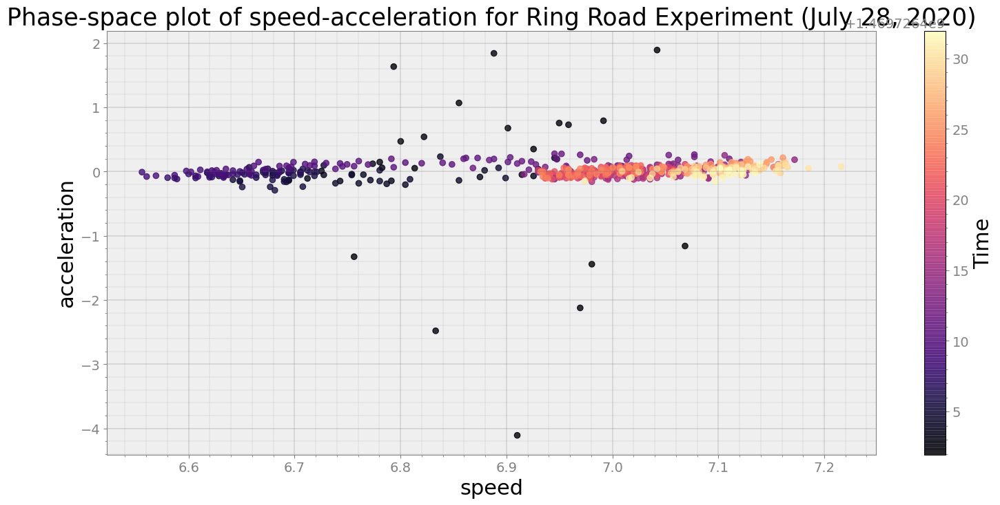
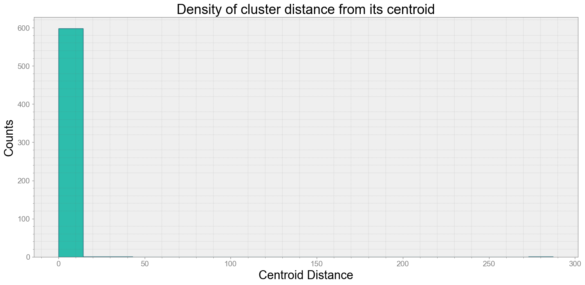
Average Centroid Distane of cluster is 0.6509367263694094
----------------------------
Covering trip times from 2016-07-28 10:20:32:003500 to 2016-07-28 10:21:02:002900
No resampling is required as time points of both dataframe are identical
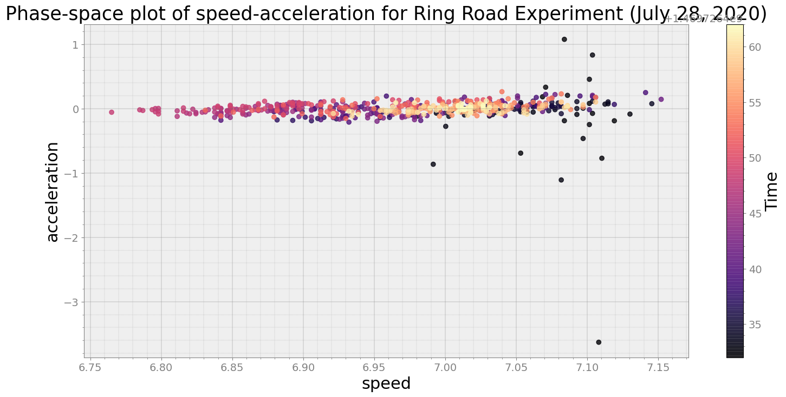
Average Centroid Distane of cluster is 0.29573222052384657
----------------------------
Covering trip times from 2016-07-28 10:21:02:048400 to 2016-07-28 10:21:32:047700
No resampling is required as time points of both dataframe are identical
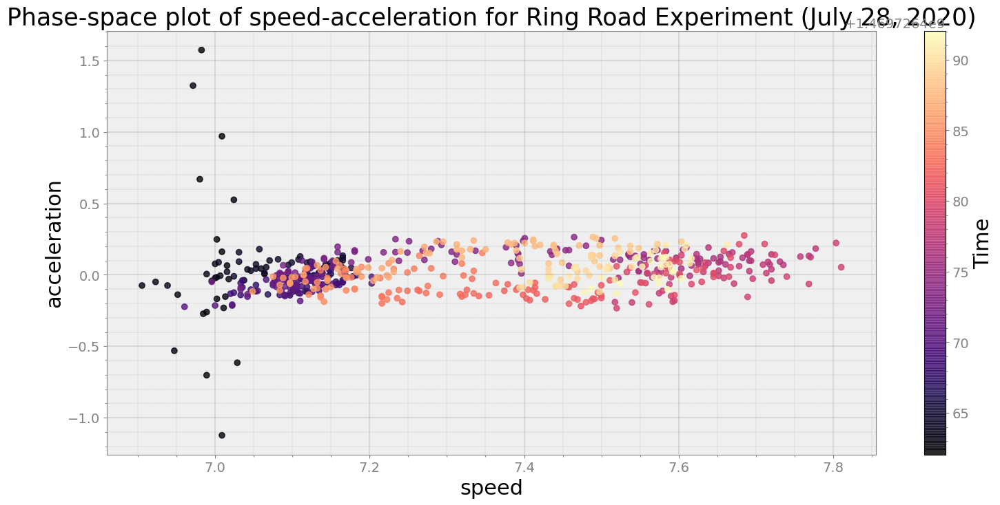
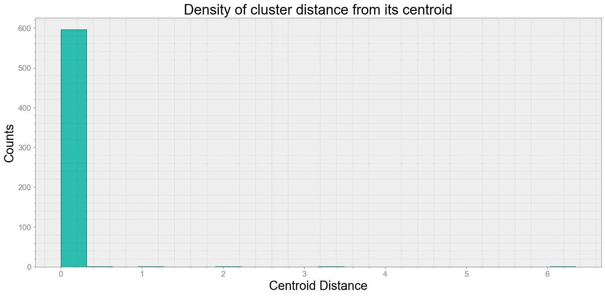
Average Centroid Distane of cluster is 0.028731628870910124
----------------------------
Covering trip times from 2016-07-28 10:21:32:101400 to 2016-07-28 10:22:02:100500
No resampling is required as time points of both dataframe are identical
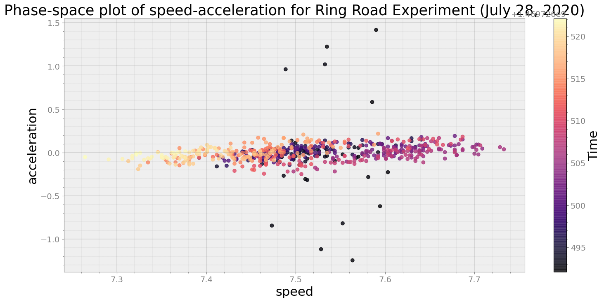
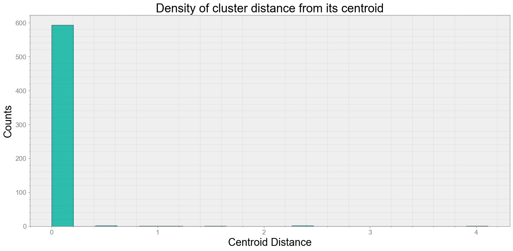
Average Centroid Distane of cluster is 0.022941138428577233
----------------------------
Covering trip times from 2016-07-28 10:22:02:148300 to 2016-07-28 10:22:32:147900
No resampling is required as time points of both dataframe are identical
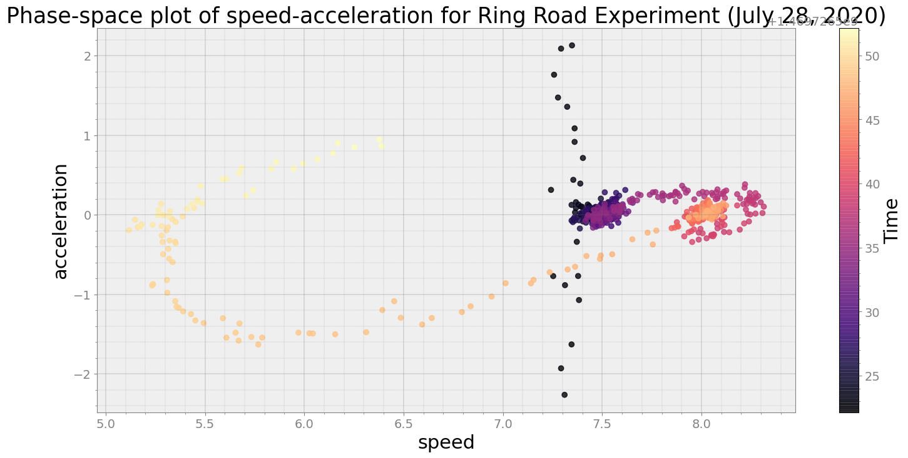
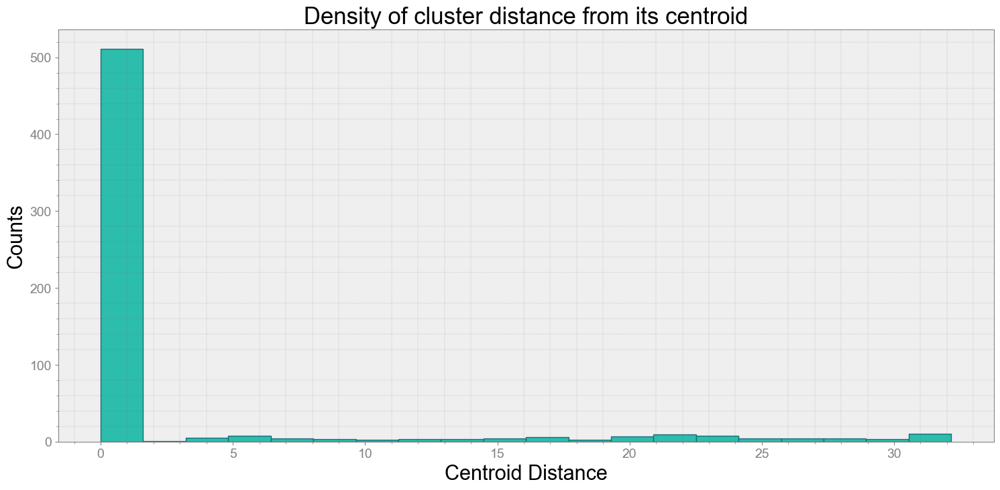
Average Centroid Distane of cluster is 2.8511797572379685
----------------------------
Covering trip times from 2016-07-28 10:22:32:201200 to 2016-07-28 10:23:02:200600
No resampling is required as time points of both dataframe are identical
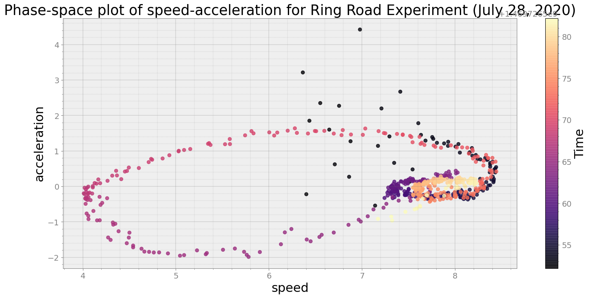
Average Centroid Distane of cluster is 13.811911586011638
----------------------------
Covering trip times from 2016-07-28 10:23:02:247200 to 2016-07-28 10:23:32:200000
No resampling is required as time points of both dataframe are identical
Average Centroid Distane of cluster is 11.071075947245374
----------------------------
Covering trip times from 2016-07-28 10:23:32:247500 to 2016-07-28 10:24:02:247000
No resampling is required as time points of both dataframe are identical
Average Centroid Distane of cluster is 0.985000799536208
----------------------------
Covering trip times from 2016-07-28 10:24:02:298200 to 2016-07-28 10:24:32:297700
No resampling is required as time points of both dataframe are identical

Average Centroid Distane of cluster is 23.651815056422443
----------------------------
Covering trip times from 2016-07-28 10:24:32:345600 to 2016-07-28 10:25:02:344700
No resampling is required as time points of both dataframe are identical
Average Centroid Distane of cluster is 30.59743440617218
----------------------------
Covering trip times from 2016-07-28 10:25:02:398500 to 2016-07-28 10:25:32:397500
No resampling is required as time points of both dataframe are identical
Average Centroid Distane of cluster is 90.95069431637675
----------------------------
Covering trip times from 2016-07-28 10:25:32:443300 to 2016-07-28 10:25:50:043200
No resampling is required as time points of both dataframe are identical
Average Centroid Distane of cluster is 281.22142044903006